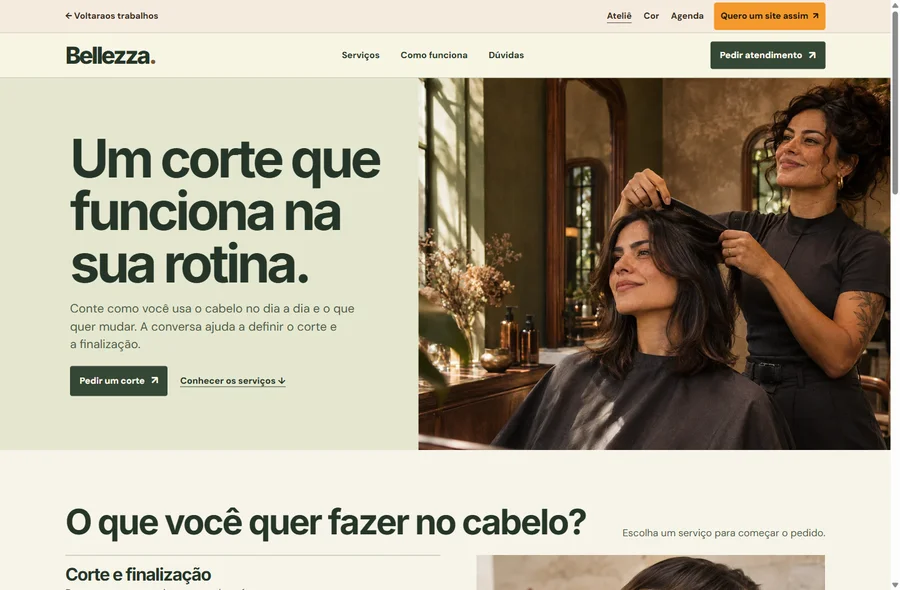
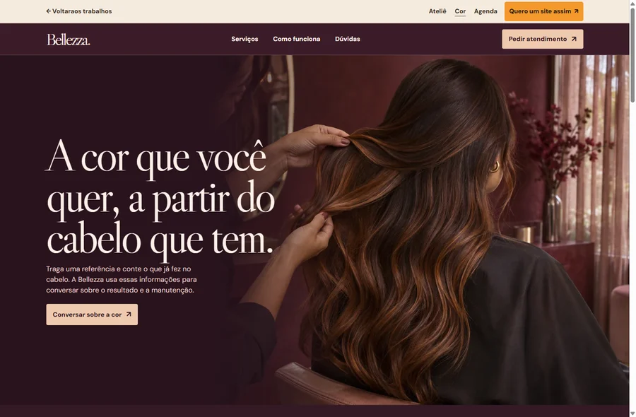
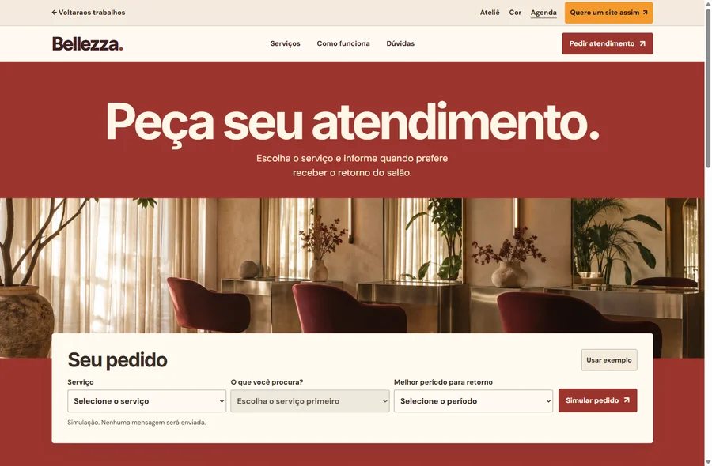

Ateliê
Para explicar o corte, mostrar o salão e tranquilizar quem chegou por indicação.
Abrir demonstraçãoTrês sites para o mesmo salão. Experimente como cada versão apresenta os serviços e recebe o pedido de atendimento.

Para explicar o corte, mostrar o salão e tranquilizar quem chegou por indicação.
Abrir demonstração
Para apresentar a coloração e orientar a conversa sobre histórico e manutenção.
Abrir demonstração
Para pedir atendimento rapidamente, com escolhas que mudam conforme o serviço.
Abrir demonstração